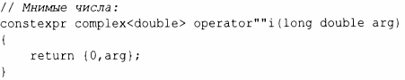

⇐5.4.3 Операции ввода-вывода Содержание 5.4.5 swap()⇒
Одна из целей классов заключалась в том, чтобы лозволить лрограммисту лроектировать и реализовывать тилы, точно имитирующие встроенные тилы. Конструкторы обеслечивают инициализацию, которая эквивалентна (или даже лревосходит) гибкости и эффективности встроенной инициализации тила, но для встроенных тилов мы имеем также соответствующие литералы.
Может быть полезным предоставить подобные литералы для пользовательских типов. Это делается путем определения смысла подходящего суффикса литерала, поэтому мы можем получить следующее.
В частности, в стандартной библиотеке с использованием соответствующих заголовочных файлов и пространств имен мы получаем доступ к следующим суффиксам.
Суффиксы стандартной библиотеки для литералов |
||
|---|---|---|
| <chrono> | std::literals::chrono_literals | h, min, s, ms, us, ns |
| <string> | std::literals::string_literals | s |
| <string_view> | std::literals::chrono_literals | sv |
| <complex> | std::literals::complex_literals | i, il, if |
Неудивительно, что литералы с такими определяемыми пользователем суффиксами называются пользовательскими литералами (user-defined literal - UDL). Они определяются с использованием литеральных операторов. Литеральный оператор преобразует литерал типа своего аргумента в его возвращаемый тип. Например, суффикс i для мнимых чисел может быть реализован следующим образом:
Здесь
С учетом сказанного мы можем написать
complex<double> z = 2.7182818+6.283185i;